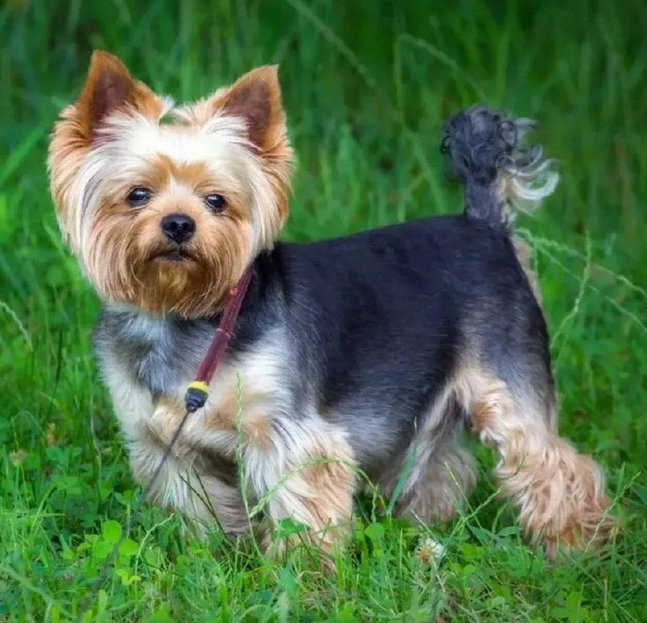

Йоркширский терьер

Происхождение: Англия
Размер: Малые (рост: 15-23 см, вес: 2-3,5 кг)
Характер: Энергичные, смелые
Особенности: Длинная шелковистая шерсть. Подходят для квартиры. Могут быть ревнивыми
Здоровье: Зубные проблемы, вывих коленей